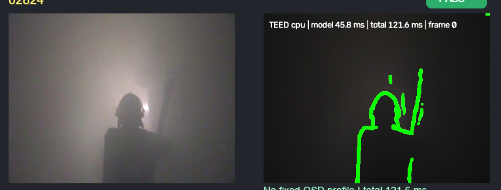

FiresightARFiresightAR
농연 속에서도 주변을 인식할 수 있도록.Making surroundings legible in low visibility.

프로젝트 개요 · 참여Overview & contribution
소방관의 구조물·장애물 인식을 돕는 열화상 기반 AR 시스템. 센서 퓨전, 캘리브레이션, 컴퓨터 비전을 담당합니다.A thermal-imaging AR system for firefighter situational awareness. My work focuses on sensor fusion, calibration, and computer vision.
구현과 접근Approach & implementation
열화상 영상의 대비 보정, TEED 기반 윤곽선 검출과 HUD 표시 파이프라인을 개발합니다. Boson 내부 캘리브레이션에서는 촬영·사진 선별·보정 계산·결과 비교 과정을 연결했습니다. 현재 시제품의 처리 성능과 실제 현장 사용성은 검증 중입니다. 중간평가 자료에서는 열화상·근적외선 영상과 전방 구조 윤곽을 Nreal Light AR 글래스로 출력하는 HUD 프로토타입을 소개했습니다. 팀은 국내외 소방대원 사용자 조사를 수행했으며, 통합 시제품과 윤곽·거리 정보 표시를 고도화하고 있습니다.I develop a pipeline for thermal-image enhancement, TEED-based edge detection, and HUD visualization. The Boson intrinsic-calibration workflow connects capture, image selection, calibration, and result review. Runtime performance and field usability remain under evaluation. The interim project review documents a HUD prototype displaying thermal/near-infrared imagery and structural outlines through Nreal Light AR glasses. The team conducted firefighter user research in Korea and the US; integration and outline/distance visualization remain ongoing development work.
윤곽선 인식과 HUD 파이프라인Edge detection & HUD pipeline
소프트웨어는 카메라·이미지·영상 입력, 밝기·대비 보정, 사전학습된 TEED 모델의 윤곽선 추론, 후처리, HUD 출력을 연결합니다. Nano 경로는 입력을 320×240으로 축소하고 CLAHE로 대비를 보정한 뒤, 약한 경계를 제거하고 선 두께를 조절합니다. 고정 숫자·마크를 제외하고 어둡게 처리한 원본 위에 초록색 윤곽을 합성합니다.The software connects camera, image, or video input to contrast enhancement, pretrained TEED edge inference, postprocessing, and HUD output. The Nano path resizes frames to 320×240, applies CLAHE, suppresses weak edges, and adjusts line thickness. Fixed numbers and logos are masked before green outlines are composited over a dimmed source image.
입력 → 대비 보정 → TEED 추론 → 경계 정리 → HUD 표시Input → Contrast enhancement → TEED inference → Edge cleanup → HUD
Orin용 경로에는 짧은 경계 제거, 시간·윤곽 안정화, 원본의 고온 표시 색상 보존과 빨간 외곽선 합성 기능이 구현되어 있습니다. 결과는 이미지·영상과 FPS·지연시간 기록으로 확인할 수 있습니다.The Orin path implements short-edge filtering, temporal and contour stabilization, preservation of the source’s hot-region display colors, and red contour overlays. Outputs include images, video, and FPS/latency records.
열화상 데이터 수집과 품질 점검Thermal capture & data quality
Boson 320 수집 도구는 flirpy를 통해 16-bit 원본 프레임을 TIFF로 보존합니다. 녹화 전 프레임 형식·크기를 확인하고 FFC를 제어하며, 타임스탬프·중복 프레임·카메라 움직임·이벤트 구간을 함께 기록합니다. 세션 점검, 카메라 위치 비교, 구간 정리, SHA-256 기반 보관 파일 검증까지 이어지는 수집 흐름을 구성합니다.The Boson 320 capture tools preserve 16-bit raw frames as TIFF through flirpy. They check frame format and dimensions, control FFC, and record timestamps, duplicate frames, camera motion, and event intervals. The workflow includes session checks, camera-position comparisons, segment trimming, and SHA-256 verification of archived data.
깊이 추정 실험Depth-estimation experiments
열화상 단독 입력의 MonoTher-Depth와 AnyThermal + MiDaS, 열화상·레이더 결합 입력의 RIDERS를 비교하기 위한 실행 도구를 준비했습니다. 16-bit 입력의 정규화와 모델별 입력 변환, RIDERS 입력 준비·스케일 정렬을 다룹니다. 현재는 적용 가능성을 검토하는 단계이며, ROS 2 연결과 실시간 레이더 투영·Jetson 최적화는 후속 과제입니다.The repository provides execution wrappers for MonoTher-Depth and AnyThermal + MiDaS with thermal-only input, and RIDERS with thermal/radar input. They cover 16-bit normalization, model-specific input conversion, and RIDERS input preparation and scale alignment. This work evaluates feasibility; ROS 2 integration, live radar projection, and Jetson optimization remain subsequent steps.
검증 범위와 다음 단계Validation scope & next steps
Fire360 열화상 HUD 영상으로 처리 과정을 재현했습니다. 이 입력은 온도를 직접 측정하는 방사형 데이터가 아닌 8-bit 표시 영상으로, 현재 MVP의 기능 범위는 화면 보정과 윤곽 시각화입니다. 온도 측정·화점 탐지·화재 위험도 판정은 수행하지 않습니다.The processing pipeline has been reproduced on Fire360 thermal HUD video. These inputs are 8-bit display images rather than radiometric measurements. The MVP covers image enhancement and outline visualization; it does not measure temperature, detect fire sources, or assess fire risk.
저장소에 기록된 Windows CPU 시험에서 고온 색상 보존·윤곽 안정화를 포함한 전체 처리율은 2.47–3.48 FPS였습니다. 이는 해당 PC와 영상 조건의 결과이며 15/30 FPS 목표를 충족하지 못했습니다. Jetson 실기 성능, 카메라부터 AR 화면까지의 지연, 현장 사용성은 추가 검증이 필요합니다. 다음 단계는 현장 데이터 기반 파인튜닝, HUD 개선과 장비 성능 검증입니다.A documented Windows CPU benchmark achieved 2.47–3.48 FPS with hot-region color preservation and contour stabilization. This result is specific to the tested PC and videos and falls below the 15/30 FPS targets. Jetson hardware performance, camera-to-AR-display latency, and field usability require further validation. Next steps include fine-tuning on field data, HUD refinement, and hardware benchmarking.
Fire360 원본·HUD 처리 결과 비교Fire360 input & HUD output comparison
